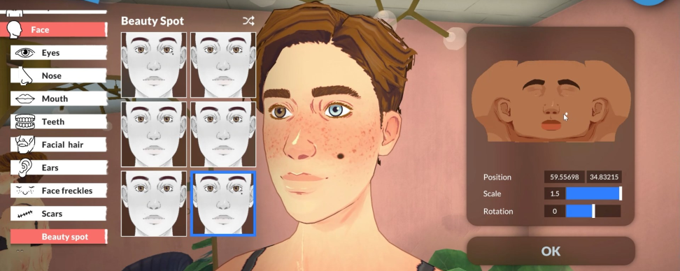
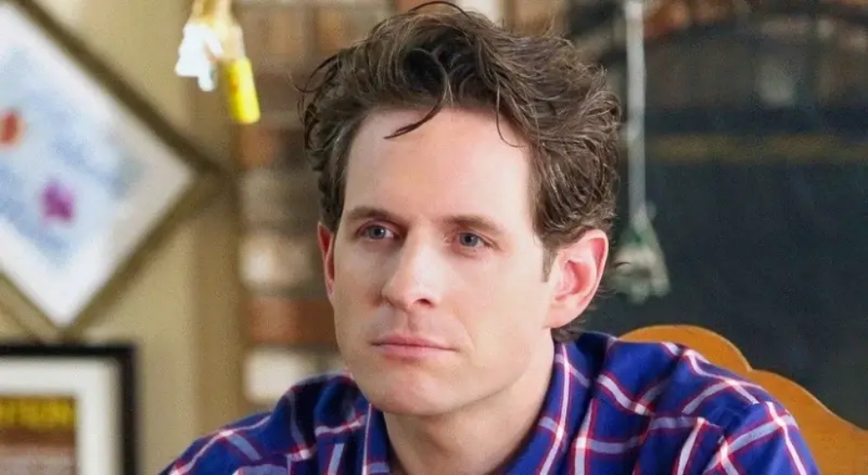
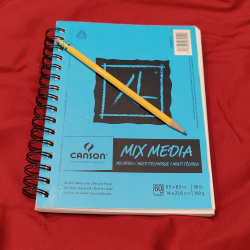
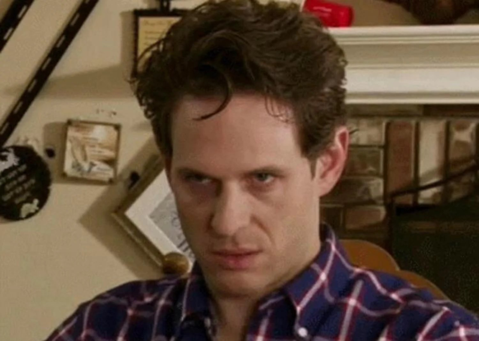
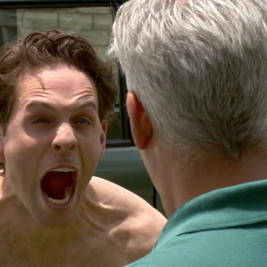
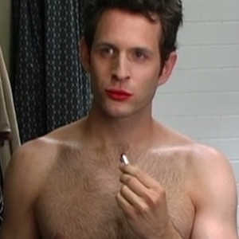

How To Create Life
Credit to Paralives for image rights.
Introduction
Character creation is not as simple in writing as it is in video games. You can't just click some buttons and watch the character come to life before your very eyes--it takes more mental effort on your part than that. On the bright side, the team at Creating Life is here to help! We wanted to develop a step by step guide on how to create a character on your own, using the analytical tools we've taught you. However, we're going about it in a different way than one may standardly expect: we're going to reverse engineer a character that already exists! We hope that with this technique, we can help people who may not be able to follow other (straightforward) guides, and thus spread our resources to an underrepresented group of creative individuals.
The character we will lovingly be reverse engineering is Dennis Reynolds, from the long-running sitcom It's Always Sunny in Philadelphia. By following along our process of tearing him apart, you will be able to create something entirely new of your own! And just remember, character creation is a CREATIVE process. While our guide helps provide some guardrails to help you focus, we hope that one day you'll be able to set off on your own without needing to follow our specific rules! Every professional biker starts off with training wheels.
Credit to Hulu's It's Always Sunny in Philadelphia for all Dennis Reynolds image rights.
Step 1: Personality
To get started with developing a new character, it's good to have some idea of where the character fits into the story. Let's get out a notebook and start jotting down some ideas! Specifically, we want to understand who this character is at their core. Some personality traits that make them who they are, some iconic things about them that viewers would notice. We're focused specifically on words on a paper right now, not imagery, so don't worry about how your character will look just yet (you can call them nerdy, but don't talk about the glasses they're wearing).
Since we're working with Dennis Reynolds as an example, let's discuss who he is as a person. This character believes himself to be a "golden god", an unquestionably perfect individual both physically and mentally. However, if we dig deeper, this relates to his mommy issues, as he had a mother who treated him like her perfect angel of a son. Along with his narcissism also comes anger issues, as no one ever knows how close he is to throwing a temper tantrum at any moment. Finally, we need to keep in mind that in the story we want to write, he needs to be the leader of the group that he is a part of. We will get more into his relationships in a later section, but him being the leader is a large part of his personality.
Step 2: Appearance
So you have a character, but no idea what they look like. It's time to start sculpting their appearance! You could do so in the same notebook that you jotted ideas in, or you could get a drawing tablet to work through a digital medium. You don't have to be the perfect artist to get some early concept art down for your character. This is for personal use, not commercial, so you can trace poses or models that you found online. Just get something down so you can visualize the character you're creating.
Even at his absolute worst, when he's breaking down and angrily screaming, Dennis can be seen wearing a nicer shirt or a flannel of some sort. He tends to also wear jeans. The exception is when he's out somewhere nice, when he cleans up with a slick suit. Dennis keeps his hair perfect, with sometimes just a curl in the front to pretend he did not put any effort in. Now, of course, we're just listing off an appearance that already exists on screen. However, imagine if this was our depiction of him as we developed him in our minds. With this imagery, you start to understand a little more about Dennis as a person. He cares deeply about his appearance, but he is also an elitist man who wants to be seen as rich and clean, and for people in those circles of society, it looks bad to put effort into your appearance. As such, he must put on a front that everything about him is all natural--that he is naturally perfect. This constant lie must be tiring for him to uphold, and as we develop him, we're starting to understand what makes him tick. We're seeing where his anger and instability comes from, at least a little.
Step 3: Relationships
A character does not exist in a vacuum. Their relationships with other people make them who they are, so now it's time to unveil who else you have in your story. If you don't have anyone else prepared yet, why not go back to Step 1 and Step 2 and try to create some more characters? Think about the character you've created thus far, and see who else they might need in their life. Mentors, friends, family, enemies, love interests--you have a lot of room to work with.
Let's imagine that we've already created the other members of The Gang from the show, and we're trying to place Dennis into that circle. I think the most important character to discuss is Dee, Dennis' twin sister. She was never good enough for her mother, always seen as a useless girl, and Dennis has continued to bully her since childhood and after their mother's death. Dennis believes her to be nothing, the equivalent of poop on the bottom of a shoe... and yet, they are twins, and thus composed of the same genetic material. Dennis worries that he is not good enough, that he will never reach the heights that he feels are expected of him by his mother, and so he pushes his twin sister down to feel less weak. He does a similar thing with Mac, who is supposedly his best friend. Charlie is the only one Dennis does not get irrationally angry with, because Charlie is pathetic and unintelligent. Dennis knows there is no power held in attacking him, and his low self esteem makes him feel some sort of empathy for Charlie.
Step 4: Arc
You can stop your character creation wherever you want. If you just wanted to create an idea without a visual example, or a visual example without other relationships associated with them, you could! In fact, you could also work out of order, making just the concept art, or just the relationships without anything else. However, if you want to continue your character creation process, the next step is figuring out the arc(s) that your character will undergo. We like doing this ahead of time to give your character some direction, so they don't become like Colin or Marissa from AP Bio.
The beautiful thing about a sitcom is that a lot of the episodes are just bottled arcs--they run their full course over the entire episode and then are forgotten about. One important arc for Dennis is when he attempts to find a model to wear the dress he was trying to sell to a clothing store. He believes wholeheartedly that he can just pick up something like fashion and ace it first try, so he designs his first dress and its, unexpectedly, shoddy. However, his inability or unwillingness to acknowledge his faults causes him to blame the model for the faults of the dress, and he ends the episode dressing up as a female model to attempt to show off the dress himself, believing that the only way a perfect dress could look good is on his perfect body. Again and again throughout the character creation process, and especially when deciding on the storylines he will undergo, we reinforce Dennis' core traits, values, and internal struggles.
Step 5: Ending
Finally, it's time to develop an ending for your character. Frankly, while the entire creation process is not a rigid structure regardless, this is the most optional of all the steps. George R. R. Martin would greatly disagree with our suggestion to prepare an ending for a character, as it can leave you feeling trapped if you end up going a different way throughout your writing process. However, it can also give you a chance to find meaning for your character--a larger arc that shadows the smaller ones that you develop. It can allow you to move forward with purpose, to ensure that your character has a lasting mark on viewers and readers who relate to the struggles they go through over the course of their story.
There is no ending for Dennis Reynolds. Since he is part of a sitcom, one that is soon to release its 17th season and nowhere near stopping, he will likely not have an ending for a long time. This is where its your turn to really push your creative self. Would you want Dennis to burn out from his rage, ending in a bitter and bright way? Would you want him to heal, to acknowledge his trauma and somehow move past it? What are the core pieces of your character that you need to clear up in order to feel like they had a good ending? That's for you to decide, and you can always contact us if you need guidance.
Conclusion
Congrats! You've learned how to create a character! Well, kind of. There is so much more to explore, so many styles to attempt, so many characters to create, and we can't teach you all of that in one guide. This is where you have to use your creativity and just make. It doesn't matter if it's good or bad, it just matters that you made something for yourself and allowed your education to speak for itself. We wish you luck on your journey, and hope to see you on the bestseller list one day.